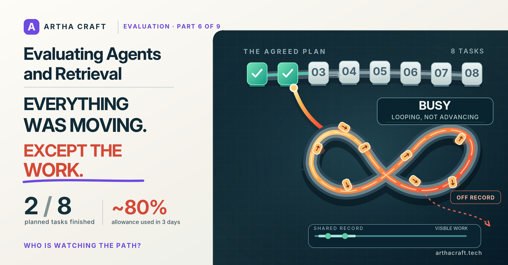

They re-ran the full test suite after every small commit
It was the right principle, applied at the wrong scale.
Agents fail in the middle, not at the end. A run can look busy at every step and still not be getting the job done. Evaluate the path, not just the result.

We set up a small team of agents to build a piece of work: a designer, an orchestrator and developer agents, running in parallel. They coordinated through a shared ledger, a written record of what had been decided and done. The work was broken into eight task files. We told the agents to review their own work, and to ask a person only if a major design change was needed. Then we let them run.
They ran for five days. Commits went in, tests ran and passed, and every step looked like work.
We found out by accident, when an antivirus pop-up appeared: one of the agents was downloading something and the security software was checking it. Without that pop-up we would not have looked. When we did, two of the eight task files were complete, and in three days the agents had used about 80 percent of the period's usage allowance. [1]
Nothing had crashed and nothing had failed a test. Everything that went wrong happened in the middle:
It was the right principle, applied at the wrong scale.
Instead of only the entries they had not yet seen.
Small, plausible tasks that were not in the plan.
Skipping the ledger, and stepping around some of the guardrails it enforced.
The flaw was ours as much as theirs. We had given them one reason to stop and ask: a major design change. Running through the budget was not a reason. Making no progress was not a reason. Doing work nobody asked for was not a reason. So they never asked.
We changed the rules. The full test suite no longer runs after every commit, and agents read only what is new in the ledger. Agents no longer talk to each other directly; an agent may only nudge another to read the ledger and point to what to read. The ledger is the only channel because it is the only one we can see, and that gave us better control over each agent.
You can only evaluate what you can see.
A single model call has one place to go wrong: the answer. An agent has many. It plans, searches, calls tools, writes, tests, hands work to another agent and decides what to do next, often dozens of times. Each step can be slightly wrong, and the next builds on it. One model provider's own guidance on building agents says it directly: "The autonomous nature of agents means higher costs, and the potential for compounding errors." [2]
Agents are also inconsistent. In a published benchmark of agents doing realistic customer-service tasks, the best agent tested succeeded on fewer than half. Asked to complete the same task eight times, it succeeded all eight times on fewer than a quarter of the retail tasks. [3] One good run proves little about the next.
People who build agents know all this already. What the benchmarks and the guidance do not show is what failure looks like from the inside, where it shows up as days of plausible activity rather than a wrong answer.
So the final result tells you less for an agent than for a single call. A finished output can sit on a wrong turn three steps back. An unfinished one, like our two of eight, can sit behind days of activity that all looked fine. In the terms of Part 1, this is the journey level, and it needs its own checks.
These are the questions our five days would have answered on day one:
Most of these are checks code can run: progress against the plan is a count, spend against a budget is a number, and a message outside the ledger can be detected. As in Part 4, the cheap, deterministic checks run first, and judgement is spent on what is left, such as whether a step was really needed.
Part 3 runs the full set before every release rather than on every change for exactly this reason: inside an agent's loop, on every small commit, it became the biggest cost we had. Match the scope of a test run to the scope of the change.
Many agents, and most assistants that answer from documents, search before they answer. The model never sees the whole document set, only what the search found. If the search found the wrong material, the model can write a fluent, confident answer from the wrong material, and nothing in the answer will look off.
In insurance, that can look like this: an older version of a policy form, an endorsement from a different policy, a clause that sounds similar but covers a different peril, or an exclusion that changes the answer and was never found at all.
So evaluate the search and the answer separately, as two questions scored apart: did it find the right material, and did the answer stay within what it found? [4] The golden set from Part 2 makes the first question checkable. For each case, the business marks which documents and sections should be found, and code checks whether they were.
Even finding the right material is not enough on its own. Researchers found that models use information best when it sits at the beginning or end of what they are given, and that performance "significantly degrades" when the relevant passage sits in the middle of a long input, "even for explicitly long-context models." [5] Retrieving fifty passages to be safe can bury the one that matters. Retrieve what is needed, and check that the answer actually used it, which is Part 4's evidence check again.
When work is split across agents and brought back together, the joins are where things go missing. Check them like any other step:
A branch that failed or timed out must stop the merge or be flagged, not silently treated as "nothing found."
When two agents disagree, the merge shows both, rather than quietly keeping one.
Each item in the result points to the agent and the step that produced it.
Work passes from one agent to another through the ledger, so the handoff itself can be checked.
Part 4 labelled every output with its input, prompt version, model version, check results and reviewer. For agents, the same label goes on every step: which agent, what it was asked, what it did, which tool it called with what inputs, what came back, and what it cost. That trace is what makes the path visible. Without it there is nothing to evaluate but the end, which is where agents look best.
The trace also feeds the golden set. A run that went wrong becomes a case: this task, this plan, this is where it drifted, this is what should have happened. The next time a run drifts that way, a test catches it.
The trace is the audit record for what an agent did on the company's behalf. If it is not in the record, it cannot be defended.
Agent runs cost money per step, so budgets and stop conditions are part of the price as well as a safety feature.
Measure progress in task files rather than commits, separate builders from verifiers, and keep every agent on one visible channel.
Every step looked like work.
Every test passed.
Two of eight were done.
Measure the agent against the plan, keep it on the record, and look at the path before you trust where it ended up.
Jitander Chauhan